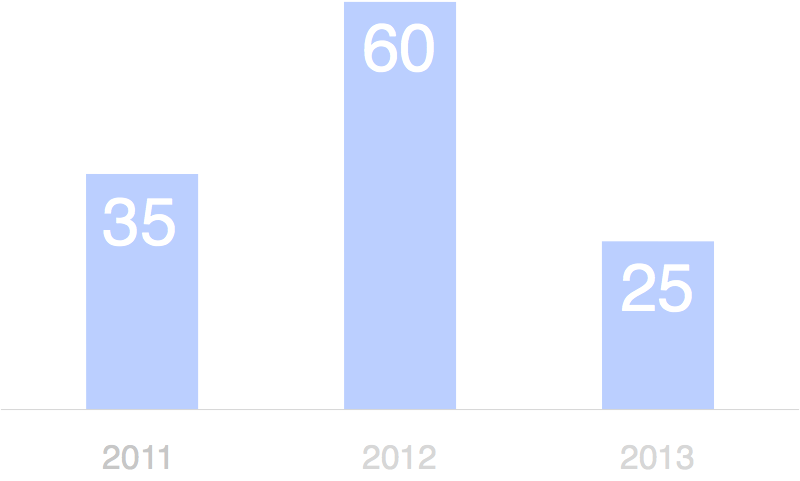
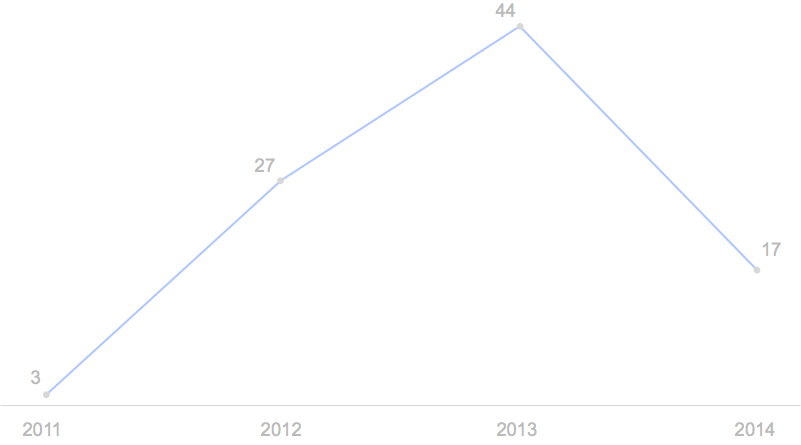
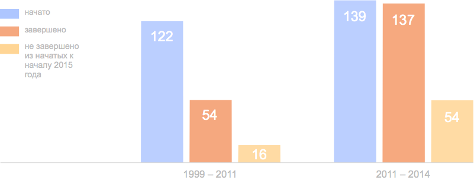
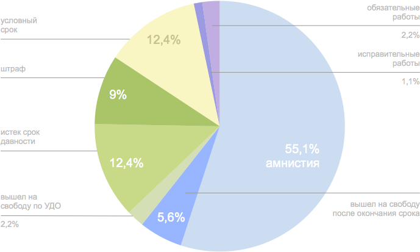
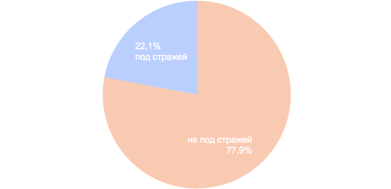

Политические репрессии в 2011-2014 годах: уголовные преследования
Исследование ОВД-Инфо об уголовном преследовании в России
#
Введение
Прежде чем приступать к анализу особенностей и тенденций, отмеченных в уголовном преследовании по политическим мотивам в России в течение предыдущих четырех лет, необходимо попытаться дать определение самого термина «политическое преследование».
Американский политолог Кристиан Давенпорт понимает под политическим преследованием преследование человека или группы лиц по политическим причинам, в частности для ограничения или недопущения их возможности принимать участие в политической жизни общества1. Существует также определение, принятое в международной правозащитной и академической среде: политическим считается преследование, сопровождающееся систематическим нарушением гражданских свобод и прав человека, зафиксированных в различных международных конвенциях2.
Можно воспользоваться также критериями, разработанными Парламентской ассамблеей Совета Европы3 осенью 2012 для определения статуса политического заключенного. Согласно ПАСЕ, человек становится политическим заключенным в том случае, если:
арест нарушает базовые гарантии Европейской конвенции о защите прав человека, в особенности в части права на свободу мысли, совести, религии, свободу выражения мнения и информации, а также свободу собраний и ассоциаций
арест налагается исключительно по политическим причинам
срок или условия заключения не пропорциональны тяжести преступления
арест имеет дискриминационный характер по сравнению с другими лицами
заключение стало результатом судебных разбирательств, которые носили явно несправедливый характер и были связаны с политическими мотивами власти.
Есть также основания для использования критериев, выработанных международной группой правозащитников4 осенью 2013 года для применения термина «политический заключенный»: в их понимании речь идет либо о людях, преследуемых исключительно за легитимную и мирную деятельность, в том числе деятельность, направленную на защиту прав и свобод граждан, либо о тех, кто, может быть, даже совершал какие-то уголовные преступления, но в действиях властей в отношении них прослеживаются политические мотивы, а кроме того, имеет место нарушение их прав в виде безосновательного лишения свободы, принятия юридических мер, непропорциональных и неадекватных нарушению, избирательность преследования по сравнению с другими. Представляется, что эти критерии могут использоваться и в случаях, когда люди, преследуемые таким образом, не оказываются в условиях лишения свободы, причем речь может идти не только об аресте и заключении, но и о других мерах пресечения и видах наказания, равно как и о самом уголовном преследовании вообще.
Однако проблема в применении к российской реальности как критериев ПАСЕ, так и позиции международных правозащитных организаций заключается в том, что практически все уголовные дела в России расследуются и рассматриваются судами с систематическим нарушением международных норм и конвенций. Таким образом, по критериям ПАСЕ политическими заключенными в России могут считаться десятки или сотни тысяч человек, что, по-видимому, все же не соответствует масштабу собственно политических преследований5.
В этом контексте необходимо в каждом анализируемом случае пытаться выявить политический мотив, без которого, в нашем понимании, говорить о политическом преследовании вряд ли возможно. Под политическим мотивом мы будем понимать желание власти или ее представителей каким-либо образом устранить либо политического оппонента, либо человека, мирным образом отстаивающего какие-либо политические, общественные, религиозные идеи и принципы, равно как борющегося с какими-нибудь действиями власти.
При анализе преследования по политическим мотивам наибольшее внимание привлекает преследование уголовное — прежде всего потому, что в большинстве случаев оно является более суровым, чем административное преследование, и легче подвергается анализу (и отчасти статистике), чем внесудебное преследование (об этих видах политически мотивированного преследования см. соответствующие доклады).
Таким образом, под уголовным преследованием по политическим мотивам следует понимать привлечение политического оппонента (или человека, занимающегося какого-либо вида общественной деятельностью, неугодной представителям власти) к уголовной ответственности либо за преступление, которого он не совершал, либо с принятием ряда мер (арест, вид и степень суровости наказания, различные сопутствующие ограничения, связанные с общественной деятельностью) более жестких, чем принимаются обычно в отношении других людей, обвиняющихся в таких же преступлениях, а также с применением различных видов нарушений законодательства и прав человека.
Случаи возбуждения уголовных дел для преследования политических оппонентов как центральной, так и региональных властей в России отмечались и на протяжении 2000-х годов — так, Правозащитный центр «Мемориал», занимающийся отслеживанием случаев уголовного преследования по политическим мотивам, регистрирует дела, разворачивавшиеся в начале 2000-х годов и даже в конце 1999 года; всего в реестре «Мемориала»6 число тех, чьи дела были заведены до 2011 года, составляет более 120 человек; «Союз солидарности с политзаключенными», в реестр которого7 включены все дела, отслеживаемые «Мемориалом», и некоторые сверх того, добавляет к этому числу еще 15 человек. Информационно-аналитический центр «Сова» с 2008 года ведет на регулярной основе мониторинг неправомерного применения антиэкстремистского законодательства (впрочем, статистика приговоров в этой области в докладах центра ведется лишь с 2011 года). Среди основных объектов преследования — активисты ныне запрещенной Национал-большевистской партии (55 человек в реестре «Мемориала») и других организаций; сотрудники компании ЮКОС; ученые, обвиненные в государственной измене, шпионаже или незаконном экспорте технологий и хищении путем растраты; мусульмане, обвиненные в причастности к террористической деятельности. В охватываемый докладом период часть дел, возбужденная в 2000-е годы, продолжилась, некоторые уже закрытые дела были возбуждены вновь, некоторые активисты, осужденные и отбывшие наказание (либо те, в отношении кого дела были прекращены), вновь стали объектами преследования. Появились и новые дела, которым в наибольшей степени и посвящен настоящий доклад.
Данные, использованные в настоящем докладе, почерпнуты из материалов Правозащитного центра «Мемориал», «Союза солидарности с политзаключенными», Центра «Сова», организации «Экоузник»8, отслеживавшей случаи преследования экологических активистов и других людей, защищающих окружающую среду, а также получены в результате мониторинга СМИ и получения информации от активистов из различных регионов России. В случае, когда человек, подвергающийся уголовному преследованию, не включен в соответствующие списки «Мемориала», «Союза солидарности с политзаключенными», «Экоузника» или материалы «Совы», ОВД-Инфо самостоятельно прибегает к описанным выше критериям, чтобы определить, является ли рассматриваемый случай примером уголовного преследования по политическим мотивам.
#
Классификация
Случаи политически мотивированного уголовного преследования можно прежде всего разделить на две большие группы.
К первой группе относятся примеры преследования, когда жертва не является для власти опасным или неприятным оппонентом сама по себе — просто законодательство и правоприменение устроены таким образом, что ряд статей УК фактически приобретает политический характер. Из этой группы можно выделить две категории: преследование с использованием антиэкстремистского законодательства и преследование участников публичных мероприятий.
Ко второй группе следует отнести примеры преследования конкретного нежелательного власти человека. Такие примеры не всегда легко классифицировать, поскольку для того, чтобы посадить или просто устранить оппонента из политической или общественной жизни, может использоваться практически любая статья Уголовного кодекса. В отличие от примеров преследования из первой группы, при анализе примеров преследования конкретных оппонентов власти возникает необходимость в каждом случае подробно говорить о политическом мотиве.
Следует, однако, оговориться, что приведенное выше деление во многом условно. Как статьи из «антиэкстремистского пакета», так и статьи, применяющиеся против рядовых участников публичных мероприятий, могут быть использованы и против конкретных активистов и политических деятелей, которые, как можно судить по их деятельности, почему-либо неугодны тем или иным представителям власти. Кроме того, люди нередко подвергаются преследованию одновременно и как участники публичных мероприятий, и как «экстремисты».
#
Применение антиэкстремистского законодательства
До последнего времени в российском Уголовном кодексе отсутствовали статьи, про которые можно было с уверенностью сказать, что они созданы для борьбы с политическими оппонентами (аналогичные статьям от 581 до 5814, а также 70 и 190-1 УК РСФСР). Впрочем, ряд статей, карающих за так называемую экстремистскую деятельность, хоть и не предполагает изначальной дискриминации политических оппонентов режима, но включает настолько общие и неконкретные формулировки, что по сути допускает весьма расширительное толкование при правоприменительной практике.
Как отмечается в одном из докладов Информационно-аналитического центра «Сова», отслеживающего неправомерное применение антиэкстремистского законодательства, само это законодательство «по сути своей политизированно, поскольку предполагает наложение санкций за деяния, мотивированные идеологически»9. Таким образом неправомерное его применение фактически является видом политического преследования. Статьи 280, 282, 282.1 и 282.2 УК нередко используются против активистов оппозиционных движений, журналистов, пишущих статьи с критикой действий властей, различных религиозных организаций. Тем самым возбуждение дел по этим статьям может сопровождаться нарушением принципов свободы слова, свободы печати, свободы вероисповедания и совести. В некоторых случаях жертвами преследования оказываются и далекие от политики люди, в высказываниях или общественной деятельности которых были безосновательно усмотрены, к примеру, признаки дискриминации социальных групп, выявленных по неясным принципам. Такие случаи, по сути, также являются примерами политического преследования. Следует отметить, что к случаям неправомерного применения антиэкстремистского законодательства относится и использование других статей, в которых фигурирует «мотив ненависти или вражды» (как, например, в ч. 2 ст. 119 УК об угрозе убийством). Наконец, с конца декабря 2013 года в УК существует как минимум две статьи, непосредственно нацеленные именно на борьбу с оппонентами. Речь о статье 280.1 УК, возникшей под влиянием событий на территории Украины, и 354.1 УК. Обе эти статьи посягают на принцип свободы слова в ситуациях, не связанных с насилием, и тем самым фактически предполагают отказ от политической дискуссии, запрет на высказывание мнений по определенным вопросам и уголовное преследование людей в связи с их политической позицией. В настоящее время расследуется по меньшей мере одно дело по статье 280.1 (подробности в разделе, посвященном преследованию участников публичных мероприятий).
Статистика, приводимая в докладах «Совы», показывает, что количество преследований членов религиозных и религиозно-политических групп в последние годы (вплоть до 2013) превышало количество преследований политических и гражданских активистов. Это означает, что всплеск политической активности конца 2011 года не отразился в большой степени на применении антиэкстремистского законодательства. Это отчасти объясняется «медлительностью машины правоприменения»10: большая часть приговоров, вынесенных в эти годы, завершила дела, возбужденные еще до выборов в Думу в декабре 2011 года. В 2012 и 2013 году из политических активистов довольно существенно пострадали от преследования по антиэкстремистским статьям члены «Другой России» несмотря на то, что они с конца 2011 года перестали играть такую заметную политическую роль, как раньше (в 2012 году по этой статье были осуждены 14 «другороссов»). Причина в том, что их, в основном, продолжали привлекать к ответственности как продолжателей дела запрещенной Национал-большевистской партии по статье 282.2 УК. В целом, «Сова» отмечает весьма небольшое число заметных представителей оппозиции, поднявшихся на волне протеста последних лет, среди жертв неправомерного антиэкстремистского преследования.
Постоянными жертвами становятся представители мусульманских движений — запрещенных в России «Хизб ут-Тахрир», «Таблиги Джамаат» и «Нурджулар» (эта организация, по всей видимости, не существует, однако фигурирует в обвинительных заключениях против последователей турецкого богослова Саида Нурси). В случае с «Хизб ут-Тахрир» эксперты «Совы» в последнее время перестали включать в статистику дела по статье 282.2, поскольку идеология движения имеет признаки экстремизма. Однако членов «Хизб ут-Тахрир» преследуют как участников террористической организации (новая статья 205.5, а также статья 205.1 УК — «Вовлечение в совершение преступлений террористического характера или иное содействие их совершению»), каковой эта партия не является, и/или как людей, планирующих насильственный захват власти (эти обвинения выдвигаются лишь на основании партийной активности). Движение «Таблиги Джамаат» запрещено как экстремистское, хотя ни в каких призывах к насилию не замечено, и его членов преследуют по статье 282.2 УК. То же касается и последователей богослова Нурси, занимающихся изучением его текстов.
По статье 282.2 ведутся дела против общин Свидетелей Иеговы (последний приговор — против 16 человек — был вынесен в июле 2014 года: девять человек были оправданы, трое приговорены к штрафам, четверо — к лишению свободы условно).
Среди примеров неправомерного преследования по статье 282 УК можно отметить случаи, когда комментарии в интернете с элементами языка вражды, то есть негативными оценками представителей той или иной национальности, расы, вероисповедания и пр., безосновательно трактуются как возбуждение ненависти либо вражды (собственно негативная оценка в состав статьи 282 не входит).
К этому ряду относится, например, дело президента ассоциации поморов Архангельской области Ивана Мосеева, которого обвинили в написании комментария, оскорбляющего этнических русских. Мосеев был не только приговорен к штрафу в 100 тысяч рублей, но также уволен из университета, исключен из всех российских общественных организаций, в которых состоял, и внесен в список экстремистов Росфинмониторинга, после чего все его счета были заморожены, так что Мосеев даже не смог выплатить штраф, к которому был приговорен11.
Нередки случаи, когда в качестве социальной группы, в возбуждении ненависти или вражды к которой обвиняют человека, выступают представители власти, например, «сотрудники правоохранительных органов», несмотря на то, что Верховный суд разъяснял, что критика должностных лиц не должна квалифицироваться по статье 282.
В течение 2014 года несколько дел по антиэкстремистским статьям, расцениваемых как неправомерные, было возбуждено в той или иной степени в связи с событиями на территории Украины.
Активиста «Гражданского движения Южного Урала» Константина Жаринова обвиняют в призывах к экстремистской деятельности за републикацию агитационного текста «Правого сектора» (в ноябре 2014 года эта организация была признана экстремистской12).
В Алтайском крае возбуждено дело по статьям 280 и 282 УК против местных оппозиционеров Андрея Тесленко и Антона Подчасова за републикацию текста «Русофобии пост», в котором, в частности, содержится призыв к украинским властям не давать русским гражданство (в ноябре 2014 года Тесленко получил политическое убежище на территории Украины13).
Учитель из города Кромы Александр Бывшев обвинен в возбуждении ненависти за стихи в поддержку Украины, признанные экстремистскими14.
По данным «Совы», в 2013 году по антиэкстремистским уголовным статьям было вынесено 15 неправомерных приговоров в отношении 25 человек15. В основном, все осужденные были приговорены к штрафам, условным срокам или обязательным работам. Большие сроки — по шесть лет колонии строгого режима — получили только осужденные в Челябинске члены «Хизб ут-Тахрир». В 2012 году было вынесено 17 неправомерных приговоров по антиэкстремистским уголовным статьям в отношении 60 человек16. В основном, осужденных приговаривали к условным срокам или штрафам. При этом 25 человек были приговорены к реальным срокам, однако в большинстве случаев они обвинялись еще и по другим статьям — в основном, за насильственные преступления.
В 2011 году неправомерно были осуждены 35 человек, 16 из них были приговорены к различным тюремным срокам17. В 2013 году более 20 новых уголовных дел, по данным «Совы», было возбуждено по антиэкстремистским статьям без должных оснований. (Отчет «Совы» об аналогичных преследованиях в 2014 году на момент написания настоящего доклада подготовлен не был.)

Количество неправомерно осужденных с применением антиэкстремистского законодательства в России: 2011-2013гг
Источник данных: Информационно-аналитический центр «Сова»
Источник данных: Информационно-аналитический центр «Сова»
#
Преследование участников публичных мероприятий
Против рядовых участников мирных массовых протестных мероприятий в последнее время используется несколько статей УК. В таких случаях могут применяться статьи 213 («Хулиганство»), а также 214 («Вандализм»), причем нередко в качестве квалифицирующего признака используются «мотивы политической, идеологической, расовой, национальной или религиозной ненависти или вражды», либо «мотивы ненависти или вражды в отношении какой-либо социальной группы» (здесь преследование по следам массовых мероприятий соединяется с применением антиэкстремистского законодательства). Статья 212 УК («Массовые беспорядки») применяется в тех случаях, когда массовые мероприятия сопровождаются случаями насилия; однако, во-первых, сам факт массовых беспорядков может быть не доказан с юридической точки зрения; во-вторых, жертвами преследования могут стать более или менее случайные люди, просто пришедшие на массовое мероприятие, участие которых в насилии либо не доказано, либо несоразмерно наказанию; в-третьих, зачинщиками массовых беспорядков могут быть названы определенные оппоненты действующей власти без каких-либо оснований. В дополнение к участию в массовых беспорядках людям может быть инкриминировано применение насилия к представителю власти (статья 318 УК), причем избирается наказание часто более суровое, чем обычно.
Решения судов по статье 318 УК РФ: 2009-2013 гг.
Кроме того, в 2014 году в рамках мер по ужесточению наказания за нарушения на массовых мероприятиях (подробнее см. доклад об административном преследовании) в Уголовный кодекс была внесена статья 212.118 — «Неоднократное нарушение установленного порядка организации либо проведения собрания, митинга, демонстрации, шествия или пикетирования»; однако преследования по этой статье начались в январе 2015 года (первыми обвиняемыми стали гражданские активисты Владимир Ионов, Марк Гальперин и Ильдар Дадин; основой для их преследования стали решения по делам об административных правонарушениях в августе, сентябре и декабре 2014 и январе 2015 года; «Мемориал» признал Ионова19 и Гальперина20 лицами, преследуемыми по политическим мотивам — с них взята подписка о невыезде, — а Дадина21, находящегося под домашним арестом, политзаключенным).
Принято считать, что гражданские активисты и просто участники массовых мероприятий стали жертвами политического преследования только после серии крупных протестных митингов, стартовавшей в декабре 2011 года (речь прежде всего о людях, обвиненных в участии в массовых беспорядках, якобы имевших место 6 мая 2012 года на Болотной площади в Москве). Однако еще в 2011 году начались процессы по следам событий 11 декабря 2010 года на Манежной площади. Тогдашние массовые волнения стали реакцией на убийство футбольного болельщика Егора Свиридова и недостаточно активные действия милиции по расследованию преступления. На Манежной имели место и многочисленные столкновения с полицией, и избиения проходивших мимо людей «неславянской внешности», но при этом к ответственности были привлечены лишь десять человек, не являвшиеся ни организаторами, ни зачинщиками. Но самому событию власти тут же попытались придать политическую окраску.
Первыми из привлеченных к ответственности по «Манежному делу» стали активисты «Другой России» Игорь Березюк, Руслан Хубаев и Кирилл Унчук (они получили от трех до пяти с половиной лет лишения свободы), и их преследование выглядело как очередной эпизод в серии многолетних преследований сторонников Эдуарда Лимонова. Последним из осужденных по «Манежному делу» на сегодняшний день стал Павел Важенин: летом 2014 года он был приговорен к трем годам лишения свободы. Его случай22 уже следует описывать как пример преследования рядового участника мероприятия. Участники событий на Манежной обвинялись по всем упоминавшимся выше статьям, характерным для политических дел: призывы к массовым беспорядкам (ч. 3 ст. 212), хулиганство (ст. 213), применение насилия к представителю власти (ст. 318), возбуждение ненависти (ст. 282).
Самым заметным политическим процессом 2012-го и последующих годов стало «Болотное дело». Произошедшие накануне инаугурации Путина столкновения с полицейскими были безосновательно интерпретированы как массовые беспорядки. К ответственности были привлечены более 20 человек, в том числе те, кто не был в тот день на Болотной площади. Позднее те, кому было инкриминировано только участие в массовых беспорядках либо призывы к оным, были амнистированы. Те же, кто обвинялся также в применении насилия к представителям власти, получили сроки, в том числе и те, кто полностью признал вину и пошел на соглашение со следствием Важно отметить, что насилие, в котором обвиняли участников событий на Болотной, либо вовсе не имело места, либо (в большинстве случаев) являлось ответом на куда большее насилие со стороны сотрудников правоохранительных органов и было средством либо самозащиты, либо защиты людей, подвергавшихся насилию. При этом никто из сотрудников правоохранительных органов не был привлечен к ответственности за превышение полномочий.
Особое место в этой истории занимает Михаил Косенко — единственный, кому инкриминировалось применение насилия, опасного для жизни и здоровья (ч. 2 ст. 318): из-за наличия у него психиатрического диагноза Косенко был признан виновным, но невменяемым и отправлен на принудительное лечение в психиатрический стационар, что позволило говорить о возвращении традиций карательной психиатрии. В июле 2014 года он был переведен на амбулаторный режим.
На сегодняшний день девять осужденных по статьям 212 и 318 УК отбывают сроки в колониях, один ожидает этапирования из СИЗО. Ярослав Белоусов, которого в феврале 2014 года приговорили к двум с половиной годам лишения свободы, а в июне решением суда второй инстанции сократили срок до двух лет и трех месяцев, вышел на свободу в сентябре, Артем Савелов, в феврале 2014 года приговоренный к двум годам семи месяцам, вышел 31 декабря. Женщины — Александра Наумова и Елена Кохтарева — были приговорены к условным срокам.
Преследование участников событий на Болотной существенно затронуло внесистемную левую оппозицию. Было возбуждено дело против одного из лидеров «Левого фронта» Сергея Удальцова и левых активистов Леонида Развозжаева и Константина Лебедева, которых следствие посчитало организаторами массовых беспорядков, а также обвинило в подготовке массовых беспорядков в разных регионах России. Лебедев пошел на соглашение со следствием, был приговорен к двум с половиной годам и освобожден условно-досрочно в апреле 2014 года. Удальцов и Развозжаев в июле 2014 года были приговорены к четырем с половиной годам колонии. Здесь политический мотив проявляется в использовании повода в виде массового мероприятия для преследования представителей популярного на тот момент оппозиционного движения.
В целом, можно с уверенностью говорить о практике применения статьи 318 УК23 в случаях, когда участник публичного мероприятия сам пострадал от насилия и есть опасность возбуждения уголовного дела против сотрудников правоохранительных органов. С ростом протестной активности в 2012—2013 годах случаи применения статьи 318 резко участились.
В 2012 году было возбуждено дело против Станислава Позднякова, получившего пощечину от полицейского; по версии следствия, пощечину дал Поздняков полицейскому; в марте 2013 года активист был приговорен к двум годам лишения свободы условно24.
1 мая 2013 года в Твери на первомайской демонстрации были задержаны активисты «Другой России», впоследствии один из задержанных — Сергей Череповский — был избит и арестован по обвинению в причинении вреда здоровью сотрудника полиции25, а позднее — приговорен к двум годам колонии.
При несколько иных обстоятельствах было возбуждено дело против лидера отделения «Другой России» в Нижнем Новгороде Юрия Староверова по следам несогласованного «Марша миллионов» 15 сентября 2012 года. Староверов пытался воспрепятствовать насилию, которое осуществлял омоновец26, и в какой-то момент схватил его за шлем. Сам Староверов во время разгона мероприятия не пострадал, но упомянутый омоновец нанес серьезную травму активистке «Другой России» Екатерине Зайцевой. В итоге Староверов был обвинен по статье 318 УК и приговорен к трем годам лишения свободы условно. Правозащитники склонны рассматривать это дело как пример не столько преследования участника массового мероприятия, сколько более или менее очевидного желании власти осудить видного оппозиционного активиста (кроме того, эту историю, разумеется, также следует считать продолжением серии преследований лимоновцев).
Статья 213 УК («хулиганство»), по которой также заводят уголовные дела против участников публичных мероприятий, имеет политический характер и по формальным признакам: в 2007 году она была изменена таким образом, что под хулиганство («грубое нарушение общественного порядка, выражающее явное неуважение к обществу») стало возможно подвести как деяния, совершенные «с применением оружия или предметов, используемых в качестве оружия», так и те же деяния, совершенные «по мотивам политической, идеологической, расовой, национальной или религиозной ненависти или вражды либо по мотивам ненависти или вражды в отношении какой-либо социальной группы» (таким образом, как отмечалось выше, статья о хулиганстве используется и в рамках антиэкстремистского законодательства).
В 2012 году одним из самых заметных политических дел стало дело, возбужденное именно по этой статье с мотивом религиозной ненависти, а также к социальной группе «православные верующие» по следам акции панк-группы Pussy Riot в храме Христа Спасителя. Можно с большой степенью уверенности говорить, что деяние, которое можно было бы расценивать как административное правонарушение, стало причиной возбуждения уголовного дела в связи с тем, что видеозапись акции в храме использовалась в вышедшем вскоре клипе песни с рефреном «Богородица, Путина прогони». В августе 2012 года Надежда Толоконникова и Мария Алехина были приговорены к двум годам лишения свободы, еще одна участница группы Екатерина Самуцевич, защите которой удалось доказать, что она не успела присоединиться к акции, при рассмотрении дела в суде второй инстанции получила два года условно. В декабре 2013 года Толоконникова и Алехина были амнистированы.
Большой резонанс вызвало дело, возбужденное в сентябре 2013 года по следам акции «Гринпис» на платформе «Приразломная» против добычи нефти в Печорском море: все члены «Гринпис», прибывшие на акцию, а также все члены международного экипажа доставившего их судна «Arctic Sunrise» были также обвинены в хулиганстве (первоначально им всем курьезным образом было инкриминировано пиратство — статья 227 УК). В декабре 2013 года все обвиняемые по «Делу Arctic Sunrise» были амнистированы.
В 2014 году статья о хулиганстве в ее «антиэкстремистском» изводе неоднократно использовалась против участников акций, прямо или косвенно связанных с событиями на территории Украины.
По этой статье было возбуждено дело против Олега Саввина, Михаила Фельдмана и Дмитрия Фонарева, вывесивших флаг Германии на здании УФСБ Калининградской области27.
После того, как на высотке на Котельнической набережной в Москве появился флаг Украины, а звезда была выкрашена в желтый и голубой, было возбуждено дело по статьям «хулиганство» и «вандализм» (статья 214 УК; также, как и хулиганство, по мотивам политической и идеологической ненависти или вражды). По горячим следам были задержаны и помещены под домашний арест четверо прыгунов с высотных зданий, которые, по всей видимости, к этой акции отношения не имели. Затем был задержан и арестован руфер28 (любитель лазать по крышам) Владимир Подрезов, а также в международный розыск был объявлен украинский руфер Павел Ушевец, известный как Григорий Mustang Wanted.
Дело о вандализме (правда, без мотива ненависти) было возбуждено в связи с акцией в поддержку Украины петербургского художника Петра Павленского «Свобода», в рамках которой он вместе с двумя другими участниками жег покрышки возле храма Спаса на Крови; Павленскому было предъявлено обвинение29.
Фактически несостоявшаяся акция, идея которой была навеяна украинскими событиями, стала поводом для возбуждения дела по упоминавшейся выше новой статье 280.1 УК. В августе 2014 года в разных регионах страны активисты запланировали марши за федерализацию — по аналогии с идеей «федерализации Украины» и поддерживаемых российской властью «народных республик». Однако только в Краснодарском крае преследование участников и организаторов марша было доведено до уголовного дела30. В настоящее время обвиняемых по делу пятеро31: под стражей находятся Дарья Полюдова (ее обвиняют также по ч. 2 ст. 280) и Сергей Титаренко; Вячеслав Мартынов и Петр Любченков уехали из России.
Подробная статистика уголовного преследования по следам публичных мероприятий пока не ведется, однако можно с уверенностью говорить о росте количества случаев возбуждения таких уголовных дел в течение рассматриваемого в докладе периода. Так, в одной Москве в 2012 году было зафиксировано только два уголовных дела по следам массовых мероприятий, включая «Болотное», в то время как в 2013 году их насчитывается уже как минимум восемь. В 2013 году зафиксированы такие дела в Твери (два дела), Нижнем Новгороде и Мурманской области. В 2014 году, с одной стороны, наблюдается спад протестной активности, с другой — к нечастым акциям приковано больше внимания органов власти, в особенности если они каким-то образом связаны с украинскими событиями; по следам акций возбуждены дела в Москве, Краснодарском крае, Калининградской области.

Количество уголовных дел возбужденных против участников публичных мероприятий в России.
Источние данных: «ОВД-Инфо»
Источние данных: «ОВД-Инфо»
#
Политическое преследование по неполитическим статьям
Преследование политических оппонентов по неполитическим статьям имело место и в 2000-х годах, хотя и не имело нынешнего размаха. В целом, по понятным причинам политическое преследование по неполитическим статьям с трудом подвергается систематизации и классификации. В каждом случае для выявления политического мотива необходим детальный анализ.
Мало сомнений вызывает политический характер преследования одного из ведущих деятелей оппозиции Алексея Навального и его сторонников. Фактически наличие политического мотива преследования Навального признал официальный представитель Следственного комитета Владимир Маркин32. В течение 2011 и 2012 года против Навального было возбуждено несколько дел.
Дело о причинении имущественного ущерба компании «Кировлес» (статья 165 УК) было прекращено в апреле 2012 года за отсутствием состава преступления, однако возобновлено спустя полтора месяца по специальному распоряжению руководства Следственного комитета. 18 июля 2013 года Навальный был приговорен к пяти годам лишения свободы, его подельник Петр Офицеров — к четырем годам. Оба были заключены под стражу, но на следующий день выпущены по ходатайству прокуратуры; заключение Навального под стражу вызвало массовые акции протеста в Москве и Петербурге. Навальный был допущен до выборов мэра Москвы, а в октябре суд второй инстанции заменил обоим реальные сроки условными.
Дело, возбужденное против Навального и его брата Олега, о мошенничестве (статья 159 УК) и легализации средств (статья 174.1 УК) в ущерб компании «Ив Роше Восток», закончилось еще одним условным сроком для Алексея Навального и реальным — для Олега (оба были приговорены к трем с половиной годам лишения свободы; в настоящее время приговор еще не вступил в законную силу); многие наблюдатели сравнили казус с реальным приговором брату оппозиционера с взятием заложника. При вынесении приговора обвинение было переквалифицировано со ст. 159 на ст. 159.4 УК (мошенничество в сфере предпринимательской деятельности).
Возбуждено дело о мошенничестве в ходе избирательной кампании Навального: один из обвиняемых, депутат московского муниципального округа Зюзино Константин Янкаускас, помещен под домашний арест, с сотрудника основанного Навальным Фонда борьбы с коррупцией Николая Ляскина взята подписка о невыезде, исполнительный директор фонда Владимир Ашурков покинул Россию.
Двум сотрудникам ФБК, Георгию Албурову и Никите Кулаченкову, предъявлено обвинение по совсем уж анекдотическому делу — о краже (статья 158 УК) картины владимирского уличного художника Сергея Сотова, который заявлял, что не имеет претензий к тем, кто снял его картину с забора.
В годы, предшествовавшие рассматриваемому периоду, чуть ли не единственными политическими активистами, подвергавшимися политическому преследованию, были члены НБП и «Другой России». Часть этих дел продолжилась и в описываемый период, но, в основном, преследование сводилось к применению описанного выше антиэкстремистского законодательства.
Особое место в этом ряду занимает дело Таисии Осиповой, активистки «Другой России» из Смоленска, о незаконном сбыте наркотиков (ч. 3 ст. 228.1 УК), возбужденное в 2010 году. Близкие Осиповой уверены в фальсификации дела, на эти мысли наводит участие в так называемых «контрольных закупках» наркотиков членов прокремлевских молодежных движений. 28 августа 2012 года (после того, как дело было направлено на пересмотр) она была приговорена к восьми годам лишения свободы.
Выдающимся примером того, что на политического активиста можно навесить практически все, что угодно, является дело Даниила Константинова, который был обвинен в убийстве.
Несмотря на то, что у Константинова имелось алиби, а следствие не смогло представить убедительных доказательств не только причастности Константинова к убийству, но даже того, что он был на месте преступления, дело было доведено до суда. В конце 2013 года суд вернул дело в прокуратуру. В мае 2014 года дело вновь поступило в суд, и в октябре суд постановил, что Константинов виновен не в убийстве, а в хулиганстве, приговорил его к трем годам лишения свободы, после чего амнистировал. Одной из возможных причин преследования Константинова можно считать его отказ от сотрудничества со спецслужбами33: по его словам, некий человек, представившийся сотрудником Центра по противодействию экстремизму и общавшийся с ним после задержания 5 декабря 2013 года, пригрозил ему «трупами и большими сроками».
Нередко жертвами политического преследования становятся экологические активисты, борющиеся с региональными властями или близкими им коммерческими организациями. Поводом для возбуждения уголовного дела против экологического активиста может стать и публичное мероприятие, однако в отличие от описанных выше случаев возбуждения дела непосредственно в связи с мероприятием, здесь скорее можно говорить о преследовании именно за активистскую деятельность вообще.
Кубанские экологи Сурен Газарян и Евгений Витишко были приговорены к трем годам условно за проведение общественной инспекции участка лесного фонда, прилегающего к так называемой «даче Ткачева» — территории в Голубой бухте недалеко от поселка Джубга, которой на правах аренды владеет некий Александр Николаевич Ткачев — либо сам глава администрации Краснодарского края, либо его полный тезка. Газарян и Витишко были обвинены в том, что исписали незаконно построенный вокруг лесного фонда забор с колючей проволокой надписями «Это наша земля», «Саня — вор!», «Ткачев, лес общий» (статья 167 УК). При этом, согласно официальным документам, такого забора не существует. Газарян был позднее обвинен в угрозе убийством (статья 119 УК) охранникам, которые не пускали его на территорию другого сомнительного строительства, и уехал из страны. Витишко же, который продолжил активную деятельность как экологический эксперт, в том числе критиковал строительство олимпийских объектов, чинила препятствия уголовно-исполнительная инспекция, контролировавшая отбывание условного срока. По ее заявлению в феврале 2014 года условный срок был заменен на реальный, и Витишко был отправлен в колонию-поселение.
Дело о грабеже было возбуждено против активиста из Северной Осетии Анатолия Колхидова, неоднократно выступавшего с требованиями закрыть завод «Электроцинк» и наказать виновных в загрязнении окружающей среды. В конце февраля 2014 года, незадолго до дня, когда должен был состояться запланированный им митинг, Колхидов был задержан по подозрению в грабеже (статья 161 УК)34: утверждалось, что он грабил бывшую жену, хотя та заявляла, что конфликт исчерпан и она не имеет к нему претензий. Колхидов был арестован, но 31 марта освобожден под подписку о невыезде.
Политическому преследованию подвергаются и журналисты.
Дело ростовского журналиста Сергея Резника стало примером того, как на человека, занимающегося критикой местной власти, могут навесить одновременно несколько совершенно не связанных между собой обвинений. Резник в ноябре 2013 года был приговорен к полутора годам лишения свободы по обвинениям35 в ложном доносе (статья 306 УК) против людей, которых он якобы сам нанял, чтобы они угрожали ему по телефону, в попытке коммерческого подкупа (статья 204 УК) сотрудника станции техосмотра, чтобы пройти техосмотр, не предъявляя машину, и в оскорблении председателя Арбитражного суда Ростовской области (статья 319 УК). К тому моменту, как Резнику был вынесен приговор, уже было возбуждено второе дело, также из нескольких не связанных друг с другом эпизодов: о ложном доносе и одновременно оскорблении оперативника ростовской полиции, оскорблении заместителя начальника управления по борьбе с экстремизмом ГУ МВД по Ростовской области и бывшего заместителя прокурора Ростовской области. 22 января Резник по второму делу был приговорен к трем годам лишения свободы.
В конце октября 2014 года к девяти годам колонии строгого режима был приговорен ростовский журналист Александр Толмачев, ему инкриминировали несколько эпизодов вымогательства, причем, как утверждает защита, безосновательно. Толмачев и его сторонники убеждены, что инициатором уголовного преследования против него был председатель Ростовского областного суда Виктор Ткачев36, деятельности которого были посвящены разоблачительные материалы Толмачева.
К политическим наблюдатели и правозащитники относят некоторые дела против заметных в регионах общественных деятелей.
В Чечне в 2014 году было возбуждено уголовное дело против правозащитника Руслана Кутаева, который был обвинен в незаконном приобретении и хранении наркотиков (статья 228 УК). Глава республики Рамзан Кадыров не скрывал политической подоплеки дела: объясняя причину ареста Кутаева, он сказал: «Он провел конференцию, приуроченную к 23 февраля, поэтому его задержали». Конференция была посвящена 70-летию депортации чеченцев, Кадыров выступил резко против ее проведения и отчитал организаторов на встрече у главы его администрации. Кутаев был единственным, кто не явился на встречу. Есть свидетельства фальсификации дела, а также того, что Кутаев подвергался пыткам37. Тем не менее он был приговорен к четырем годам лишения свободы. В конце октября 2014 года Верховный суд Чечни после беспрецедентно долгого рассмотрения апелляционной жалобы (более недели) сократил срок на два месяца.
Несколько политических дел было возбуждено в связи с событиями на территории Украины.
В Новочеркасске возбуждено уголовное дело против местного экологического активиста Сергея Лошкарева. Представляется, что его деятельность как экологического активиста играет здесь второстепенную роль, а поводом для возбуждения дела по статье 222 УК стала публикация обращения к лидеру признанного позднее экстремистским «Правого сектора» Дмитрию Ярошу с призывом навести порядок в городе. В настоящее время Лошкарев находится под стражей. Сторонники считают, что оружие Лошкареву подбросили38.
Не исключено, что одним из поводов для возбуждения дела против антифашиста Алексея Сутуги, который был приговорен к трем годам и одному месяцу лишения свободы за драку с ультраправыми, в которой, по собственным словам, не участвовал, явилась его поездка на Майдан39.
Правозащитный центр «Мемориал» признал политическим дело, возбужденное в связи с военными действиями на территории Украины, в рамках которого украинская летчица Надежда Савченко обвинена в причастности к убийству российских тележурналистов Игоря Волошина и Антона Корнелюка. У правозащитников есть основания полагать, что Савченко была незаконно похищена с территории Украины и до задержания в качестве обвиняемой незаконно принудительно удерживалась на территории РФ, подвергаясь допросам в качестве свидетеля40.
В силу сложности анализа таких дел — по причине как их разнородности, так и неоднозначности в вопросе наличия политического мотива в некоторых случаях — ведение статистики довольно затруднительно. По крайней мере можно утверждать, что процесс возбуждения политических уголовных дел не прекращается и интенсивность его не спадает.
По данным Правозащитного центра «Мемориал»41, по состоянию на конец октября 2014 года в России насчитывается 46 политических заключенных (в этот список входят не только приговоренные к различным срокам заключения, но находящиеся под стражей и под домашним арестом в ходе расследования дел и судебных слушаний); впрочем, в этот список входят и некоторые преследуемые по «антиэкстремистским статьям», попадающие в статистику Информационно-аналитического центра «Сова»42 — пятеро осужденных в Челябинске членов «Хизб ут-Тахрир», четверо членов той же организации в Уфе, находящиеся в СИЗО, и Дарья Полюдова, также находящаяся в СИЗО. (На настоящий момент двое человек, внесенных в этот список, — Артем Савелов, осужденный в рамках «Болотного дела», и кемеровский блогер Дмитрий Шипилов, осужденный за публикации в интернете о местных должностных лицах, — вышли на свободу (Шипилов ожидает суда по новому, аналогичному делу); Олег Навальный, которого «Мемориал» ранее признал преследуемым по политическим мотивам, был 30 декабря 2014 года помещен под стражу, в связи с чем Правозащитный центр в январе 2015-го признал его политзаключенным.)
Оперативно обновляемый список «Союза солидарности с политзаключенными», который включает в себя всех политических заключенных из списка «Мемориала», а также некоторых других преследуемых в рамках уголовных дел, на сегодняшний день считает политзаключенными 53 человек (с учетом изменений, не внесенных в официальный список «Мемориала»), а еще 15 человек — преследуемыми по политическим мотивам (из них шестеро находятся в розыске, семеро — под подпиской о невыезде, один приговорен к исправительным работам). При этом только у 20 человек из 68 преследуемых в настоящее время по версии «Союза солидарности с политзаключенными» преследование было начато до 2011 года. Кроме того, в течение рассматриваемого периода, по версии «Союза солидарности с политзаключенными», уголовное преследование по политическим мотивам было начато и завершено в отношении 85 человек, в отношении 21 человека было завершено преследование, начатое еще до рассматриваемого периода.

Уголовные политические преследования в России с 1999 года.
Источник данных: «Союз солидарности с политзаключенными»
Источник данных: «Союз солидарности с политзаключенными»
Из преследований, начатых до 2011 года, не завершены 15%, из начатых в 2011—2014 — 36%.
Из этих 106 человек 49 были амнистированы (большинство на этапе следствия), дела 18 человек были закрыты (из них у семи в связи с истечением срока давности), 11 человек получили условные сроки (один из них также к штрафу), 10 человек были освобождены от наказания за истечением срока давности, восемь человек были приговорены к штрафам, пять человек вышли на свободу по истечении срока заключения, двое — условно-досрочно, двое человек были приговорены к исправительным работам, один — к обязательным работам, и у одного человека приговор был отменен за истечением срока давности. Еще у двух человек, дела которых были возбуждены до рассматриваемого периода, срок давности истек, однако производство было возобновлено.

Уголовные политические преследования, завершенные в 2011-2014 гг.
Источник данных: «Союз солидарности с политзаключенными»
Источник данных: «Союз солидарности с политзаключенными»

Статус преследуемых в настоящий момент.
Источник данных: «Союз солидарности с политзаключенными»
Источник данных: «Союз солидарности с политзаключенными»
Статистика преследований отчасти затруднена тем, что одного и того же человека могли преследовать по разным делам, и не в каждом случае очевидно, следует ли учитывать эти дела в рамках одного преследования или разных, не связанных между собой.
Следует отметить также, что данные «Мемориала», «Союза солидарности с политзаключенными» и «Совы» охватывают, по всей видимости, не все случаи уголовного преследования, которые можно расценить как политические.
#
Преследования в Крыму
ОВД-Инфо не включает Республику Крым и город федерального значения Севастополь в число регионов, где ведется мониторинг политических преследований. Однако поскольку здесь начало действовать российское законодательство и функционируют российские органы власти, политическое преследование жителей Крыма становится материалом рассмотрения. Используется материал, собранный Крымской полевой миссией по правам человека43 — сводной группой представителей различных правозащитных организаций Украины, России, других стран СНГ, а также международных организаций.
Наибольший резонанс получило дело против кинорежиссера Олега Сенцова, по которому в настоящее время проходят уже восемь человек, всех их обвиняют в подготовке терактов на территории Крыма (статья 205 УК — «Терроризм»). Сенцов участвовал в деятельности «Автомайдана»44, украинского гражданского движения автомобилистов, перевозивших всё необходимое для Майдана и украинских военных, блокированных в Крыму. Один из обвиняемых, Геннадий Афанасьев, уже приговорен к семи годам заключения.
Кроме того, возбуждено дело по следам массового мероприятия — о применении насилия к сотрудникам полиции 3 мая 2014 года45, когда в разных районах Крыма местные жители начали блокировать трассы в связи с тем, что лидера крымских татар Мустафу Джемилева не пускали на территорию полуострова. В настоящее подозреваемых пятеро46 — Муса Абкеримов, Рустам Абдурахманов, Таир Смедляев, Эдем Эбулитов и Эдем Османов (арестован 21 января 2015 года).
#
Некоторые особенности процедуры
В соответствии с описанными выше критериями определения политзаключенных, выделенными международной группой правозащитников, политический мотив в преследовании определенных людей зачастую сопряжен с нарушением их прав. Например, лишение свободы было применено в нарушение права на справедливое судебное разбирательство, доказательства инкриминируемого преступления были сфальсифицированы, событие или состав преступления отсутствовали (или его совершил другой человек), продолжительность или условия лишения свободы неадекватны правонарушению, преследование ведется избирательно в отношении данного лица по сравнению с другими лицами.
Сам по себе выбор помещения в СИЗО и даже домашнего ареста в качестве меры пресечения может свидетельствовать о предвзятости суда. Вместо того, чтобы проверить наличие оснований для избрания строгой меры пресечения, на которые ссылается следователь («может скрыться, оказать давление на свидетелей, повлиять на работу следствия»), суд просто соглашается со следователем и избирает требуемую строгую меру.
Иногда домашний арест избирается вместо СИЗО, если преследуемый женского пола — так было с Александрой Наумовой в «Деле двенадцати», позднее трансформировавшемся в «Дело восьми».
Влиятельного политика могут держать под домашним арестом, поскольку его помещение в СИЗО может вызвать массовый протест (случаи Сергея Удальцова и Алексея Навального).
Самым вопиющим, по-видимому, следует считать случай с любителями прыжков с парашютом с высотных зданий (бейсджамперами) Александром Погребовым, Алексеем Широкожуховым, Евгенией Коротковой и Анной Лепешкиной, задержанными по подозрению в раскрашивании звезды на московской высотке: судя по всему, они были помещены под домашний арест потому, что их непричастность к делу более или менее очевидна всем, однако власть отказывается это признавать формально47.
В некоторых случаях суды игнорируют наличие у преследуемых серьезных заболеваний, являющихся препятствием для помещения их в СИЗО.
Суды отказывались отправить под домашний арест Таисию Осипову, несмотря на то, что она больна тяжелой формой сахарного диабета, которая входит в перечень заболеваний, несовместимых с пребыванием в СИЗО.
Политические дела нередко сопровождаются фальсификациями различных доказательств.
В деле Даниила Константинова, в частности, было сфальсифицировано его опознание ключевым свидетелем обвинения: сначала тот якобы опознал Константинова по фотографиям, хотя другие люди на фотографиях были на него не похожи, а затем, хотя Уголовно-процессуальный кодекс запрещает повторное опознание, опознал его уже лично, но, по словам Константинова, не глядя на него, а только назвав номер, под которым он сидел.
Было сфальсифицировано опознание48 одного из обвиняемых по «Болотному делу», Сергея Кривова: так называемые потерпевшие омоновцы указали на другого человека, однако в протоколе было записано, что они опознали именно Кривова.
В «Болотном деле» обвинение нередко строилось на ложных показаниях так называемых потерпевших и свидетелей, опровергавшихся видеоматериалами. Например, Артем Савелов был обвинен в применении насилия к бойцу 2-го оперполка московского ГУВД во время задержания, это подтверждали боец Александр Гоголев, которого Савелов якобы хватал за руку и бронежилет, и его сослуживец Андрей Емельянов, который вместе с ним якобы задерживал Савелова. Между тем на видео четко видно, что Савелова задерживали не бойцы 2-го оперполка, а сотрудники ОМОН49, носящие совершенно другую форму.
В деле Константинова многие документы, как предполагают адвокаты, составлены задним числом.
В деле Руслана Кутаева, помимо показаний полицейских об обстоятельствах задержания, расходящихся друг с другом, имеется протокол освидетельствования обвиняемого врачом-неврологом, в которое, по ее словам, кто-то добавил сведения о содержании в его моче морфина и кодеина50.
Избирательность при уголовном преследовании выражается в том, что либо человек преследуется за то, что делали, помимо него, многие другие, либо к нему применяются более жесткие методы воздействия, чем к другим обвиняемым.
В деле о событиях на Манежной площади 2010 года, как отмечает сотрудник Правозащитного центра «Мемориал» Сергей Давидис, «среди многих сотен людей, которые делали одно и то же, выделены менее десяти человек, которые приговорены к реальным срокам»51.
Александр Толмачев был задержан вместе с двумя другими подозреваемыми в вымогательстве, однако под стражу поместили только его.
В деле о незаконной организации азартных игр в Воронежской области было много подозреваемых, однако с июля 2014 года под стражей оставался только бывший участковый Роман Хабаров, известный в регионе как человек, занимающийся правозащитной деятельностью и оказанием юридической помощи, в том числе, экологическим активистам (в конце августа он был переведен под домашний арест52, а в январе 2015 года — под подписку о невыезде).
Свидетельством политического преследования может служить участие сотрудников управлений и центров по противодействию экстремизму в тех делах, к которым они по закону не имеют отношения.
В деле о бытовом убийстве, возбужденном против Даниила Константинова, были использованы оперативные материалы Главного управления по противодействию экстремизму МВД о его проверке на предмет возможной принадлежности к организации, которая занимается незаконными действиями.
Оперативник Центра по противодействию экстремизму (ЦПЭ) присутствовал при обыске в доме Таисии Осиповой и активно интересовался судьбой ее мужа, видного члена «Другой России» Сергея Фомченкова. Кроме того, именно оперативники ЦПЭ изымали наркотические вещества у «засекреченной свидетельницы», якобы получавшей их от Осиповой.
Жертв политпреследования могут подвергать пыткам, чтобы выбить нужные показания, и насилию без очевидных оснований.
Леонид Развозжаев, пытавшийся получить политическое убежище в Киеве, заявлял, что после похищения оттуда его подвергали пыткам.
Имеются сообщения54 о том, что конвойные в суде избивали обвиняемых по «Болотному делу»55.
Даниил Константинов был избит в конвойном помещении суда в день вынесения решения по делу.
#
Выводы
Проанализировав характерные черты и примеры уголовного преследования по политическим мотивам в России в 2011—2014 годах, можно утверждать, что федеральная и региональные власти используют самые различные инструменты для преследования оппонентов на разных уровнях, будь то представители или лидеры внесистемных оппозиционных движений, участники массовых протестных мероприятий или члены религиозных организаций, которые государство почему-либо посчитало экстремистскими (следует, однако, отметить, что видных деятелей оппозиции власть предпочитает преследовать либо в связи с массовыми мероприятиями, либо по «неполитическим» статьям). Довольно существенный всплеск активности в возбуждении уголовных дел против политических оппонентов отмечается в 2014 году в связи с событиями на территории Украины, причем это касается и дел против граждан Украины, и дел против жителей Крыма, и дел против участников массовых мероприятий, и дел с применением антиэкстремистского законодательства, и дел по «неполитическим» статьям.
Уголовное политически мотивированное преследование сопровождается нарушениями (как процессуальными, так и нарушениями прав преследуемых) практически на каждом этапе прохождения дела — вне зависимости от того, причастен человек к инкриминируемому ему поступку или нет. Оправдательными приговорами такие дела заканчиваются редко, в особенности рассматриваемые в Москве и привлекающие внимание общественности. Обвиняемые и осужденные по некоторым делам были амнистированы в декабре 2013 года и 2014 году. В некоторых случаях власть идет на смягчение приговоров — возможно, по причине повышенного внимания общественности к соответствующим делам: при рассмотрении дел в судах второй инстанции срок могут незначительно сократить или заменить на условный.
Нельзя не признать, что при анализе и обработке примеров уголовного преследования, соответствующих теме настоящего доклада, возникают определенные методологические трудности. Это касается прежде всего выявления того самого политического мотива, без описания которого говорить о преследовании, в особенности не связанном напрямую с посягательством на основные гражданские свободы, практически не имеет смысла. Очевидно, что факт наличия политического мотива не поддается доказыванию. Можно говорить лишь о допущении — о том, что, по всей видимости, причиной преследования того или иного деятеля стала его деятельность, вызвавшая недовольство у властей. Кроме того, при попытке формализовать описание случаев политически мотивированного уголовного преследования обнаруживается, что ряд аспектов и деталей преследования (прежде всего касающихся различных нарушений процедуры и прав преследуемого) плохо поддается формализации. Когда речь заходит, например, о ведении следствия, ходе судебного процесса и конкретных нарушениях, описание выглядит как разрозненный набор фактов в форме рассказа. В связи с этим довольно сложно подвергать эти данные статистической обработке. Если о преследовании по «экстремистским статьям» частично (прежде всего в отношении дел, возбужденных по следам публикаций в интернете) можно говорить, что оно поставлено на поток, то в случае с преследованием в связи со свободой собраний, а уж тем более с преследованием конкретных людей по различным «неполитическим» статьям можно говорить только о наборе уникальных случаев, не выстраивающихся в ясную и наглядно описываемую систему.
 оглавление
оглавление
 комментарии
ссылки
комментарии
ссылки
 о докладе
о докладе
Статья 280 УК РФ: Публичные призывы к осуществлению экстремистской деятельности.
Статья 282 УК РФ: Действия, направленные на возбуждение ненависти либо вражды, а также на унижение достоинства человека либо группы лиц по признакам пола, расы, национальности, языка, происхождения, отношения к религии, а равно принадлежности к какой-либо социальной группе, совершенные публично или с использованием средств массовой информации либо информационно-телекоммуникационных сетей, в том числе сети «Интернет».
Статья 282.1 УК РФ: Организация экстремистского сообщества.
Статья 282.1 УК РФ: Организация деятельности экстремистской организации.
Статья 280.1 УК РФ: Публичные призывы к осуществлению действий, направленных на нарушение территориальной целостности Российской Федерации.
Статья 354.1 УК РФ: Реабилитация нацизма.
Замглавы администрации президента Владислав Сурков заявил, что «11-е происходит от 31-го», имея в виду акции «Стратегии-31», а министр внутренних дел Рашид Нургалиев объявил, что «к массовому противостоянию и столкновениям», произошедшим на Манежной, собравшихся «подстрекала» «леворадикальная молодежь».
Статья 165 УК РФ: Причинение имущественного ущерба путем обмана или злоупотребления доверием.
Статья 167 УК РФ: Умышленная порча имущества из хулиганских побуждений.
Статья 222УК РФ: Незаконное приобретение, хранение и ношение огнестрельного оружия и боеприпасов.
Экоузник-2013. Годовой доклад.
Parliamentary Assembly of the Council of Europe (PACE), 2012
Информационно-аналитический центр «Сова», годовой доклад за 2012 год.
ОВД-Инфо, 25.11.2013
University of Minnesota Press, 2004; Davenport, C. State Repression and the Domestic Democratic Peace New York. – Cambridge University Press, 2007
P. M. Regan, E. A. Henderson. Third World Quarterly. Vol. 23, No. 1 (Feb., 2002)
Документ подготовлен группой правозащитников из стран Восточной Европы и Южного Кавказа, опиравшихся на рекомендации экспертов Совета Европы.
Основные тенденции политического развития России в 2011 – 2013 гг.
Кризис и трансформация российского авторитаризма.
Доклад Фонда «Либеральная миссия». М., 2014.
Список составлен правозащитным центром «Мемориал»
Список составлен «Союзом солидарности с политзаключенными»
ОВД-Инфо, 06.10.2014
Информационно-аналитический центр «Сова», 15.08.2014
Информационно-аналитический центр «Сова», 30.07.2014
Информационно-аналитический центр «Сова», годовой доклад за 2013 год.
Информационно-аналитический центр «Сова», годовой доклад за 2011 год.
ОВД-Инфо, 17.10.2014
Правозащитный центр «Мемориал», 27.01.2015
Правозащитный центр «Мемориал», 27.01.2015
Правозащитный центр «Мемориал», 27.01.2015
ОВД-Инфо, 01.07.2014
Информационно-аналитический центр «Сова», 05.09.2013
ОВД-Инфо, 09.11.2012
Правозащитный центр "Мемориал", 04.07.2012
ОВД-Инфо, 28.11.2013
ОВД-Инфо, 04.04.2014
ОВД-Инфо, 02.06.2014
ОВД-Инфо, 30.08.2014
Информационно-аналитический центр «Сова», 06.10.2014
ОВД-Инфо, 31.08.2014
Информационно-аналитический центр «Сова», 29.09.2014
«Политика в этом деле присутствует исключительно в связи с фигурой и действиями обвиняемого. Со стороны следствия – только исполнение Уголовно-процессуального кодекса в связи с выявленными фактами злоупотреблений. <...> Но если фигурант всеми силами привлекает к себе внимание, можно даже сказать, дразнит власть – вот, мол, я какой весь в белом на общем фоне, то интерес к его прошлому увеличился и процесс выведения на чистую воду, естественно, ускорился».
Газета «Известия», 12.04.2013
ОВД-Инфо, 29.09.2014
«Кавказский узел», 09.03.2014
ОВД-Инфо, 29.10.2014
Комитет против пыток, 08.07.2014
ОВД-Инфо, 15.06.2014
ОВД-Инфо, 08.04.2014
Правозащитный центр «Мемориал», 14.10.2014
Правозащитный центр "Мемориал", 30.10.2014
ОВД-Инфо, 27.05.2014
ОВД-Инфо, 21.10.2014
«Открытая Россия», 25.11.2014
ОВД-Инфо, 21.08.2014
«Грани.Ру», 14.01.2014
«Грани.Ру», 10.12.2013
«Новая газета», выпуск № 61 от 6.06.2014
ОВД-Инфо, 01.07.2014
«Время Воронежа», 07.07.2014
Правозащитный центр «Мемориал», 31.10.2014
«Русская планета», 01.10.2013
«ЗакС.Ру», 26.02.2014
Политические репрессии в 2011-2014 годах: уголовные преследования
В докладе анализируются случаи преследования по политическим мотивам, осуществляемые в уголовном порядке в 2011-2014 годах в России. Этот доклад — составная часть линейки докладов ОВД-Инфо о современных российских политических репрессиях, задача которых в первом приближении описать как устроены, насколько масштабны и против кого направлены современные российские политические репрессии.
Вы можете скачать данный доклад в формате .pdf
Доклад подготовлен при поддержке Фонда имени Генриха Белля
“Table of Contents” icon created by Mike Rowe from the Noun Project.
“Notes” icon created by Jeff Portaro from the Noun Project.
“References” icon created by Julia Simplicio from the Noun Project.
“Information” icon created by José Campos from the Noun Project.
“Pdf” icon created by José Campos from the Noun Project.
Политические репрессии в 2011-2014 годах: уголовные преследования, лицензировано в соответствии с Creative Commons Attribution 3.0 Unported License.